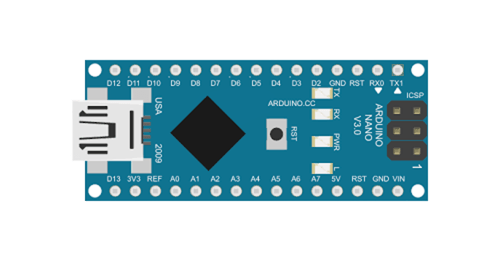

Clique no botão abaixo para procurar o caminho da placa:
Placa:

Os botões abaixo servem para deixar a placa em standby ou iniciar o envio e recepção de dados.
Serve para confirmar se o servidor está se comunicando corretamente com a placa.
Estado: